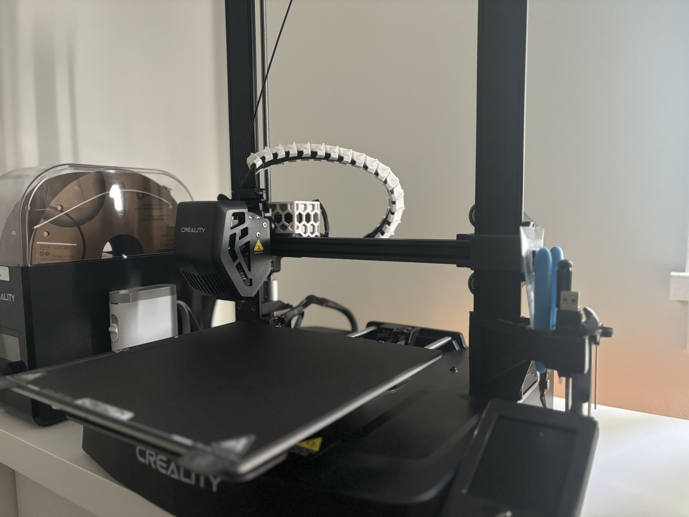
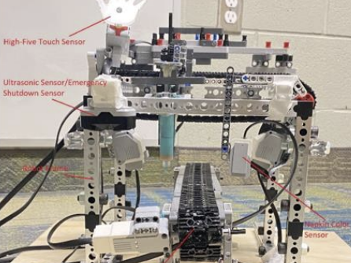
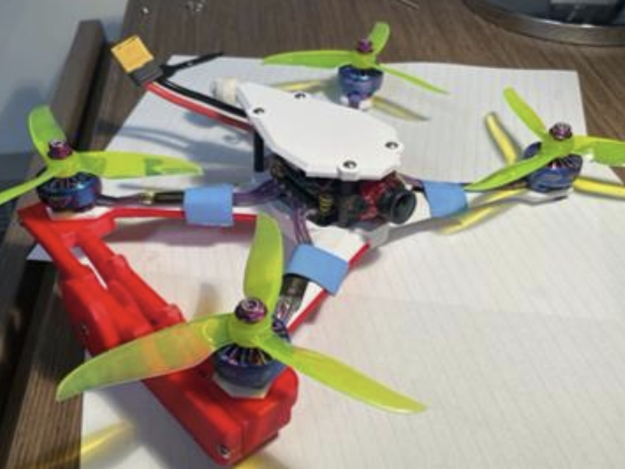
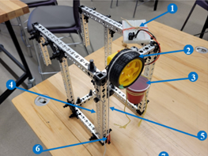
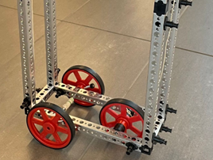
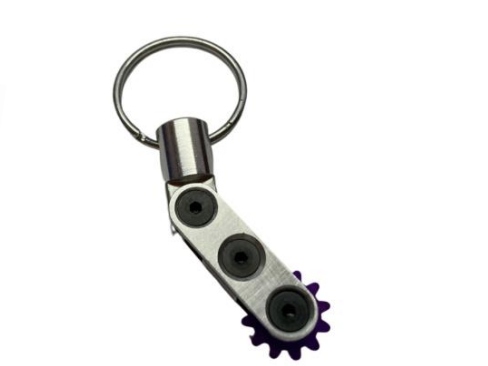
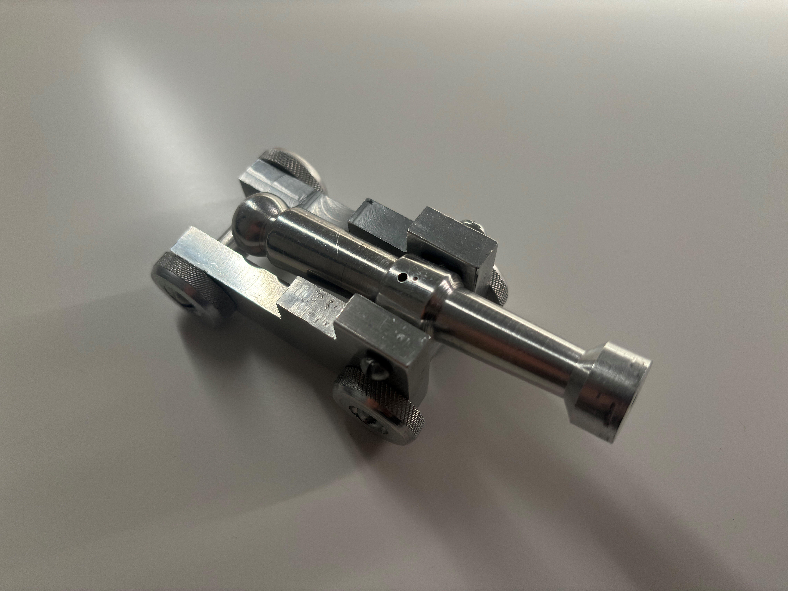

Rapid Design and Prototyping Venture
Stay tuned for more updates...

Automated Cookie Designer
Fully automated 3-axis frosting extrusion system for designing cookies

FPV RC Vehicle
Car-Drone
A remote controlled vehicle capable of travelling on both land and air

Rope Brake Dynamometer
Rope brake dynamometer built to evaluate the torque of a TT motor at various rotation rates

AWD
Gravity Car
AWD gravity car designed to leverage mechanical advantage to transform tension into torque

Mechanical
Keychain
Mechanical keychain designed in Solidworks and fabricated with shop machinery

Miniature
Cannon
Cannon designed on Solidworks and fabricated using shop machinery